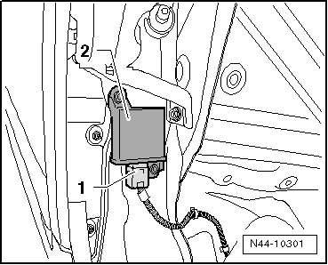

Right Front Tire Pressure Monitoring Transmitter
Right Front Tire Pressure Monitoring Transmitter
Removing
The Right Front Tire Pressure Monitoring Transmitter (in wheel housing) (G432) is installed on the rear wheel housing behind the wheel housing liner.
- Switch ignition off.
- Remove wheel housing liner.
- Separate connector - 1 -.

- Remove the expanding rivets securing the Right Front Tire Pressure Monitoring Transmitter (in wheel housing) (G432) and remove the transmitter - 2 -.
Installing
- Insert the Right Front Tire Pressure Monitoring Transmitter (in wheel housing) (G432) - 2 - and secure it with expanding rivets.
- Connect harness connector - 1 -.
- Install wheel housing liner.